概述
本文讲述自定义固件相关操作。
自定义固件
下载源代码
https://github.com/openwrt/openwrt
本文示例为17.0.6
申明镜像
根据cpu选择相应的架构，例如我们选择ramips的mt7621 cpu。
vi openwrt-17.01.6/target/linux/ramips/image/mt7621.mk
添加如下自定义（xcv1）
define Device/unlto-g3
DTS := UNLTO-G3
IMAGE_SIZE := $(ralink_default_fw_size_16M)
DEVICE_TITLE := unlto g3
DEVICE_PACKAGES := kmod-usb3 kmod-usb-ledtrig-usbport kmod-ata-core kmod-ata-ahci
endef
TARGET_DEVICES += unlto-g3添加板子基本配置
添加名称对应
在 target/linux/ramips/base-files/lib/ramips.sh 文件中添加新设备名称。
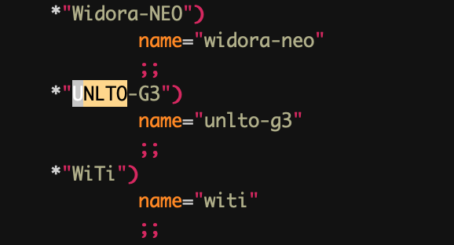{width=”2.7in” height=”1.4574398512685913in”}
添加led sys灯支持
编辑 target/linux/ramips/base-files/etc/diag.sh
 {width=”5.153042432195975in”
height=”1.6945319335083115in”}
{width=”5.153042432195975in”
height=”1.6945319335083115in”}
Network设置
编辑 target/linux/ramips/base-files/etc/board.d/02_network
 {width=”5.768055555555556in”
height=”1.6916666666666667in”}
{width=”5.768055555555556in”
height=”1.6916666666666667in”}
注意：因为我们主板的特殊性， 0是wan口，4是lan口，所以需要调整
添加
编辑openwrt-17.01.6/target/linux/ramips/image/mt7621.mk文件，添加内容
define Device/unlto-g3
DTS := UNLTO-G3
IMAGE_SIZE := $(ralink_default_fw_size_16M)
DEVICE_TITLE := unlto g3
DEVICE_PACKAGES := kmod-usb3 kmod-usb-ledtrig-usbport kmod-ata-core kmod-ata-ahci
endef
TARGET_DEVICES += unlto-g3添加硬件配置
在openwrt-17.01.6/target/linux/ramips/dts 目录中添加UNLTO-G3.dts
/dts-v1/;
#include "mt7621.dtsi"
#include <dt-bindings/input/input.h
/ {
model = "UNLTO-G3";
memory@0 {
device_type = "memory";
## 内存大小
reg = <0x0 0x8000000;
};
chosen {
## 115200 调试串口波特率
bootargs = "console=ttyS0,115200";
};
gpio-leds {
compatible = "gpio-leds";
buzzer {
label = "buzzer";
gpios = <&gpio0 0 0;
};
aerial {
label = "aerial";
gpios = <&gpio0 26 0;
};
sim {
label = "sim";
gpios = <&gpio0 22 1;
};
modpower {
label = "modpower";
gpios = <&gpio0 24 0;
};
stormgreen {
label = "storm:green";
gpios = <&gpio0 16 0;
};
stormred {
label = "storm:red";
gpios = <&gpio0 28 0;
};
wangreen {
label = "wan:green";
gpios = <&gpio0 13 1;
};
wanred {
label = "wan:red";
gpios = <&gpio0 14 1;
};
4g1 {
label = "4g:1";
gpios = <&gpio0 29 1;
};
4g2 {
label = "4g:2";
gpios = <&gpio0 31 1;
};
###每组gpio为32，4g3为32所以修改为gpio1 0
4g3 {
label = "4g:3";
gpios = <&gpio1 0 1;
};
};
palmbus: palmbus@1E000000 {
i2c@900 {
status = "okay";
pcf8563: rtc@51 {
status = "okay";
compatible = "nxp,pcf8563";
reg = <0x51;
};
};
};
gpio-keys-polled {
compatible = "gpio-keys-polled";
#address-cells = <1;
#size-cells = <0;
poll-interval = <20;
reset {
label = "reset";
gpios = <&gpio0 17 1;
linux,code = <KEY_RESTART;
};
};
};
&sdhci {
status = "okay";
};
&gpio1 {
status = "okay";
};
&spi0 {
status = "okay";
m25p80@0 {
#address-cells = <1;
#size-cells = <1;
compatible = "jedec,spi-nor";
reg = <0;
spi-max-frequency = <10000000;
m25p,chunked-io = <32;
partition@0 {
label = "u-boot";
reg = <0x0 0x30000;
read-only;
};
partition@30000 {
label = "u-boot-env";
reg = <0x30000 0x10000;
read-only;
};
factory: partition@40000 {
label = "factory";
reg = <0x40000 0x10000;
};
partition@50000 {
label = "firmware";
reg = <0x50000 0x1fb0000;
};
##这里单独做了一份32m 的rootfs_data，是因为uboot要求会从0x2000000开始识别，用于存储uboot需要的数据
partition@2000000 {
label = "rootfs_data";
reg = <0x2000000 0x2000000;
};
};
};
&pcie {
status = "okay";
pcie0 {
mt76@0,0 {
reg = <0x0000 0 0 0 0;
device_type = "pci";
mediatek,mtd-eeprom = <&factory 0x8000;
ieee80211-freq-limit = <5000000 6000000;
mtd-mac-address = <&factory 0xe000;
};
};
pcie1 {
mt76@1,0 {
reg = <0x0000 0 0 0 0;
device_type = "pci";
mediatek,mtd-eeprom = <&factory 0x0000;
ieee80211-freq-limit = <2400000 2500000;
mtd-mac-address = <&factory 0xe000;
};
};
};
ðernet {
mtd-mac-address = <&factory 0xe000;
};
&pinctrl {
state_default: pinctrl0 {
gpio {
ralink,group = "wdt", "rgmii2", "jtag", "mdio";
ralink,function = "gpio";
};
};
};执行
删除openwrt/tmp 执行make menuconfig
 {width=”5.768055555555556in”
height=”6.094444444444444in”}
{width=”5.768055555555556in”
height=”6.094444444444444in”}
编译自己的软件
参考 《openwrt,Lede深入学习笔记v2.0.pdf》中编译软件的方法。这里描述了一个compile c的方法并将代码打成安装包。
还有另外一种，直接将执行文件拷贝的方法，例如mwan3.
include $(TOPDIR)/rules.mk
PKG_NAME:=mwan3
PKG_VERSION:=2.0.2
PKG_RELEASE:=1
PKG_MAINTAINER:=Florian Eckert <fe@dev.tdt.de
PKG_LICENSE:=GPLv2
include $(INCLUDE_DIR)/package.mk
define Package/mwan3
SECTION:=net
CATEGORY:=Network
SUBMENU:=Routing and Redirection
DEPENDS:=+ip +ipset +iptables +iptables-mod-conntrack-extra +iptables-mod-ipopt
TITLE:=Multiwan hotplug script with connection tracking support
PKGARCH:=all
endef
define Package/mwan3/conffiles
/etc/config/mwan3
endef
define Build/Compile
endef
define Package/mwan3/install
$(CP) ./files/* $(1)
endef
$(eval $(call BuildPackage,mwan3))打包基础固件
通过openwert编译后，会生成一个基本可用能上网的路由器固件，但是如果我们有一些特殊的业务需要持续增加的时候怎么办呢？例如向增加一个/etc/config/test
Openwrt提供了 image builder 的功能，make menuconfig的时候，选择相应的选项后，会在bin/targets目录下生成镜像的同时，也生成一个builder。
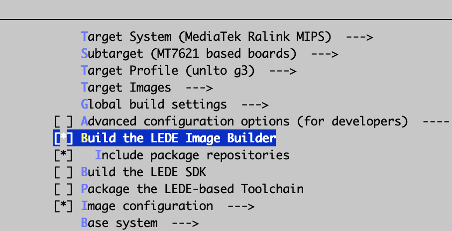{width=”5.768055555555556in” height=”2.9472222222222224in”}
解压后，在文件夹下创建一个files目录，files/etc/config/test，并执行
make image FILES=files/ PROFILE=unlto-g3 PACKAGES=" mwan3 "
这个语句会将 files里面的文件直接覆盖到系统的/下，packages执行将那些软件打入image中。
编译成功后，会在bin/targets/ramips/mt7621/ 目录下生成相应的bin。
注意&问题
设定一个大的可写空间
 {width=”4.552777777777778in”
height=”4.282638888888889in”}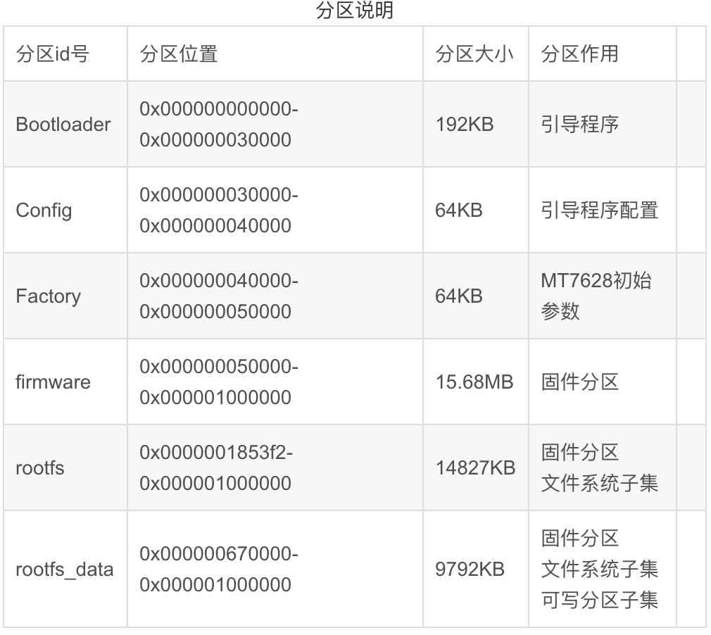{width=”5.768055555555556in”
height=”5.151388888888889in”}
{width=”4.552777777777778in”
height=”4.282638888888889in”}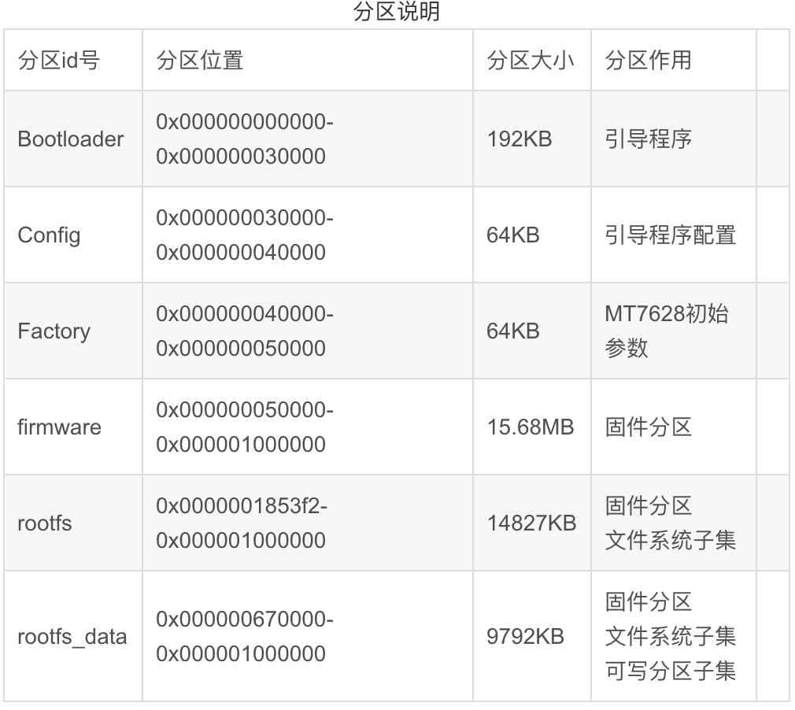{width=”5.768055555555556in”
height=”5.151388888888889in”}
在linux系统中对闪存类存储器是采用MTD（内存技术设备）类设备驱动实现的，MTD是用于访问闪存类设备(ROM,FLASH)的linux驱动子系统。在openwrt中会将flash进行分区，内容为上图。固件中只有rootfs_data区域是可以写的。如果需要写入，并且重启不会消失。
这样就需要在dts配置里添加一个名字为rootfs_data的32m的分区，但是由于在默认情况下，rootfs中就会包含一个rootfs_data，所以就会出现两个rootfs_data。
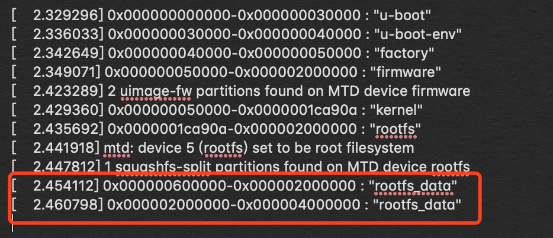{width=”5.768055555555556in” height=”2.482638888888889in”}
这种情况下就需要修改配置 target/linux/ramips/mt7621/config-4.4 ,添加如下配置，这样就明确申明不需要从rootfs中切分出一个小的rootfs_data，而是用我们申明的32m空间。
# CONFIG_MTD_SPLIT_SQUASHFS_ROOT is not set ————————————————–
 {width=”5.222490157480315in”
height=”2.2640048118985128in”}
{width=”5.222490157480315in”
height=”2.2640048118985128in”}
双镜像uboot
双镜像的uboot
https://github.com/angusding/witi-uboot
Reboot 卡死问题
MT7621完美支持32M SPI Flash(W25Q256) 修复 soft reset fail
https://blog.csdn.net/yubing_615/article/details/52649489
添加第三方包
默认的openwrt只有核心源码，如果需要拓展新的功能，就需要导入packages，checkout到相应的版本，进行导入。
https://github.com/openwrt/packages
模组上网方式不同
红茶的模组使用了移远和广和通的模组，启动模组后通过ifconfig -a 可进行查看。
移远为usb0 ————– 广和同为eth1
为什么有这样的区别呢？猜测（）
广和通用的是 cdc Ethernet support，系统分为为eth1（因为eth0已经给默认网卡了），而移远使用usb support的 cdc acm，分配为usb0。
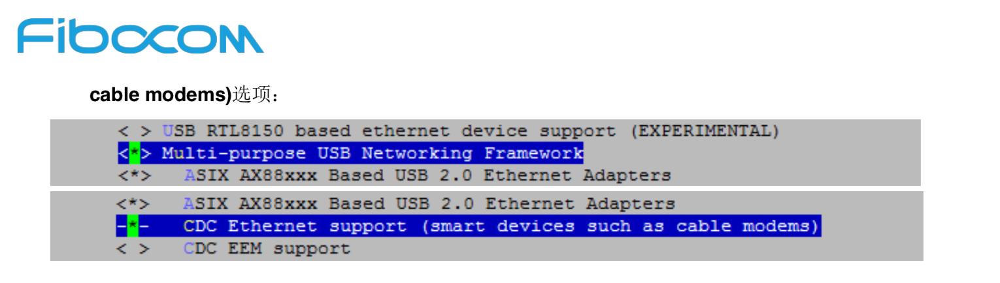{width=”5.768055555555556in” height=”1.636111111111111in”}
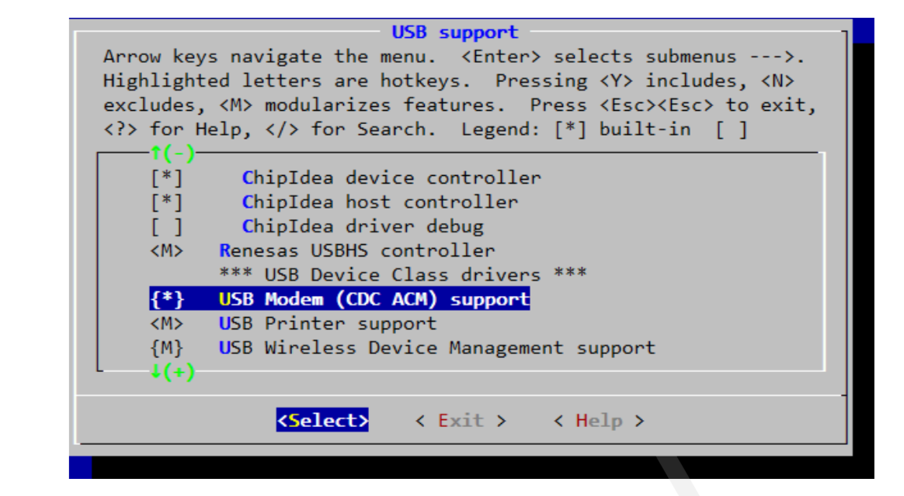{width=”5.768055555555556in” height=”3.171527777777778in”}
Wan口也需要dhcp？
平常我们接触到的是，电脑连接路由器，路由器会有dhcp服务，分给电脑一个ip。那问题来了，路由器的ip谁给分的呢？
所以不论是wan口插线，还是4g信号联网，很重要的一部也是需要发起dhcp client请求，让server分配一个ip。对应到openwrt配置里面，就是proto=dhcp。
例如使用uci 设置。
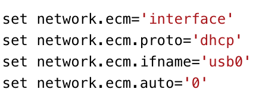{width=”3.0557130358705162in” height=”1.2639534120734908in”}
主板相关信息
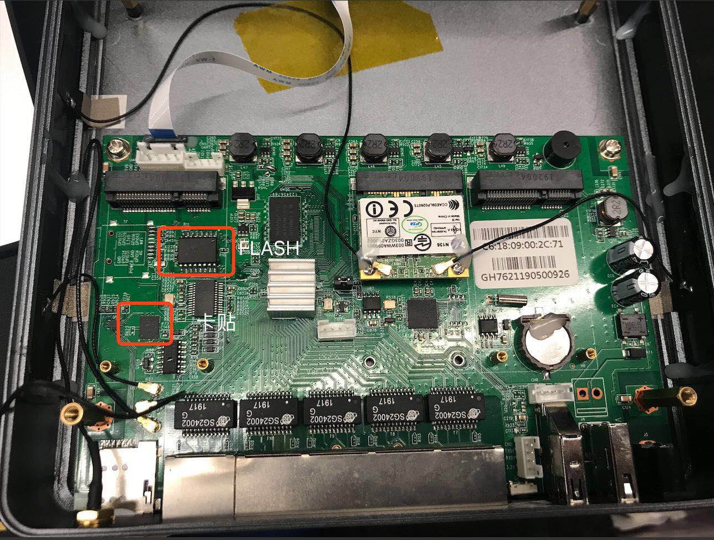{width=”5.768055555555556in” height=”4.361805555555556in”}
刷机流程
-
所有操作在windows上完成
-
将设备的console口通过串口线与电脑连接，将lan口通过网线与电脑连接
-
将电脑的IP地址设为固定IP:192.168.128.10,不要设置网关
-
通过windows的设备管理理器器查看串口的编号地址，一般为COM3（查看硬件设备可获知）
-
使用putty连接设备的串口连接
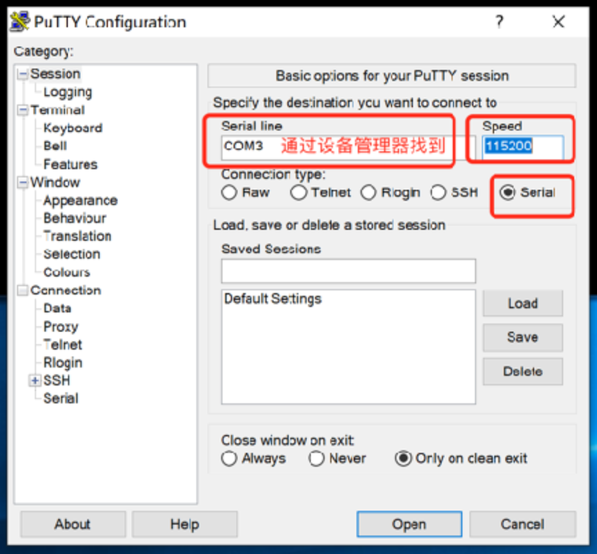{width=”5.768055555555556in” height=”5.348611111111111in”}
- 开启TFTP服务，设置IP和固件存放的目录
 {width=”5.768055555555556in”
height=”4.884722222222222in”}
{width=”5.768055555555556in”
height=”4.884722222222222in”}
-
将设备断电重连，会在putty看到设备启动时候的日志，当出现数字选项时(0-9的数 字)，快速输入9(快速输⼊入防⽌止⾃自动进⼊入默认的选项，9对应的应该是:Load U-Boot code then write to Flash via TFTP，以实际的显示为准)，回车，输入IP填 192.168.128.1，输出IP填192.168.128.10，然后输入uboot固件的名称(与固件存放目 录下的⽂文件名保持一致)。回车后开始刷uboot。
-
uboot刷成功以后设备会⾃自动重启，再次进⼊入数字选项时输入4，回车进入命令模式，此时输入”erase linux”命令，擦出旧版本的系统，命令会处理理一段时间，处理完成后执行reset命令。
-
重新启动后进入数字选项阶段，此时输入2选项”Load system code then write to Flash via TFTP”。操作步骤与刷入uboot相同，只有最后一步的⽂文件名需要改为系统固件的的名称
-
刷机操作需要执行行几分钟，此后不不需要在做其他操作，putty会一直显示设备的操作日志。刷机完成后会进入默认选项，默认选项是启动系统，此时会显示设备启动的相关信 息，包含4G模块，wifi状态及wan口lan口状态，等待一会日志不在刷新时，按回车进入新的系统。出现下图代表刷机成功
附件
Uboot刷完后配置参数
ETH_STATE_ACTIVE!!
*** ERROR: `ethaddr' not set
刷完uboot后可能会报上面的错误，这是需要设置相关参数
-
重新上电
-
选择4 enter boot command line interface
-
执行erase linux 擦除原系统
-
执行setenv ethaddr “00:0c:43:0a:0b:0d”
-
执行saveenv保存
-
执行reset重启
刷看门狗
- 设备先不上电，并且用串口连接看门狗的串口，并按上跳帽
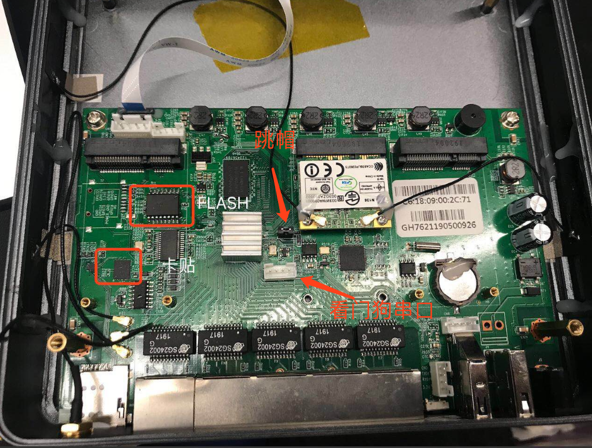{width=”5.768055555555556in” height=”4.368055555555555in”}
- 先按照下图进行配置
 {width=”5.768055555555556in”
height=”4.156944444444444in”}
{width=”5.768055555555556in”
height=”4.156944444444444in”}
- 上电
附件中的pro_1726_2.hex设定时间为50秒，需要持续喂狗，50秒没有收到信息设备将会重启